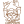

Backend
Développement de la logique métier et des fonctionnalités côté serveur.
PHP
Laravel
REST API
Développeur Web Full Stack
Je suis Auxence Paolo de SOUZA, développeur web full stack basé au Bénin. Je conçois et développe des applications web modernes, utiles et adaptées aux besoins réels.
01 - À PROPOS
Je suis Auxence Paolo de SOUZA, développeur web full stack basé au Bénin.
Titulaire d'une licence en informatique de gestion, je m'intéresse particulièrement à la conception et au développement d'applications web.
Mon objectif est de transformer un besoin ou une idée en une solution numérique claire, fonctionnelle et adaptée à ses utilisateurs.
Je travaille principalement avec PHP et Laravel pour le développement backend, ainsi qu'avec HTML, CSS, JavaScript et Bootstrap pour les interfaces web.
La gestion des bases de données avec MySQL et l'utilisation de Git et GitHub font également partie de mon environnement de développement.
02 - COMPÉTENCES
Les technologies et outils que j'utilise pour concevoir, développer et faire évoluer mes projets web.
Développement de la logique métier et des fonctionnalités côté serveur.
Création d'interfaces web responsives et adaptées aux différents écrans.
Conception et gestion des données nécessaires au fonctionnement des applications web.
Outils de développement et gestion de versions pour organiser et faire évoluer les projets.

Composer XAMPPAnalyse des besoins et conception de solutions adaptées aux utilisateurs.
Intégration de services externes et de fonctionnalités web dans les applications.
03 - PARCOURS
Une formation en informatique de gestion complétée par une première immersion dans le monde professionnel et par des projets concrets de développement web.
Formation
Formation en informatique de gestion avec un intérêt particulier pour le développement d'applications et les technologies web.
20 avril - 20 juillet
Développeur Web
Participation au développement et à l'évolution de projets réalisés au sein de l'entreprise, dans un environnement professionnel.
Cette expérience m'a permis de mieux m'intégrer à la vie professionnelle, de travailler sur des projets concrets et de m'adapter aux réalités du terrain en tant que développeur web.
Jusqu'au 20 avril 2027
Poursuite de mon parcours au sein de UTC-Service dans le cadre d'une période d'incubation, avec une implication dans les projets et l'approfondissement de mes compétences professionnelles.
Projet de fin d'études
Conception et développement d'une plateforme web progressive destinée à faciliter le signalement et la gestion des interventions d'urgence médicale.
04 - PROJETS
Quelques projets sur lesquels je travaille ou que j'ai développés dans le cadre de ma formation et de mon parcours de développeur.
Santé · Urgences · PWA
Une plateforme web progressive conçue pour faciliter le signalement et la gestion des situations d'urgence médicale.
Le citoyen peut transmettre une alerte avec sa position GPS et une photo de l'incident. Les acteurs chargés de l'intervention peuvent ensuite gérer la mission et suivre son évolution.
PROCHAIN PROJET
05 - SERVICES
Conception et développement d'applications web adaptées à des besoins spécifiques.
Création de sites modernes, responsives et adaptés à différents types de projets.
Développement de fonctionnalités backend, APIs et gestion de bases de données.
Conception d'outils numériques permettant de répondre à des besoins professionnels ou organisationnels.
06 - CONTACT
Vous avez une idée d'application, un projet web ou un besoin spécifique ? Vous pouvez me contacter directement.
 PHP
PHP Laravel
Laravel HTML
HTML CSS
CSS JavaScript
JavaScript Bootstrap
Bootstrap Tailwind
Tailwind MySQL
MySQL Git
Git VS Code
VS Code